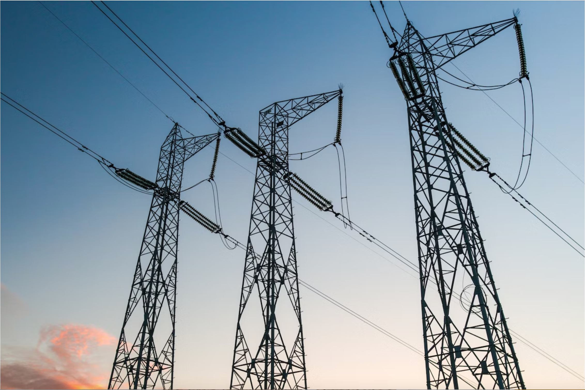

Do not use real usernames and passwords
|

|
ElectricityThe emission factor for this section is 0.5703 kgCO2e/kWh. We separate the electricity consumption into 4 different parts: air conditioning, lights, showering, and others. For AC, we time each of the energy consumption rates, which is different in winter and summer[1],by the time it is used. The light emission equals the energy consumption rate, which is 0.01 kWh per hour[2], times the time used. The light and air conditioner's carbon footprint is divided evenly among the people in the dorm. The showering part is separated into the water heating[3] and the water production[4]. Aside from all these, each person also accounts for 2 tons of carbon emission from public spaces such as academic buildings (data from the Operation Department). |
FoodThe food sector's calculation is much easier. Each user is classified into five categories, according to their diet: Meat Lover, Average, No Beef, Vegetarian, and Vegan, which each accounts for 3.3t, 2.5t, 1.9t, 1.7t, and 1.5t of CO2 per year, respectively [5]. Then, the average food waste is around 10% to 30%. Therefore, food waste of less than 10% will decrease the food impact by 20%, and food waste of more than 30% will increase the food impact by 10% [6]. |
|
|
|
TransportationThe train's emission factor is 46g CO2e/km [7]. Since the speed is different for every type of train [8], we let the user input the type of train and the time they took. The emission factor of the plane is 115g CO2e/km [9]. We use estimated distance to calculate the CO2 emission. The car's emission factor is different for petrol cars and electric cars, which is 192g CO2e/km [10] and 114.05g CO2e/km [11] respectively, with an average speed of 30km/hr [12] due to the complexity of roads. Thus, most of our target users (which are the students inside UWCCSC) cannot drive, so the average car occupancy is about 2.3 people, which will be divided from the CO2 emitted. |